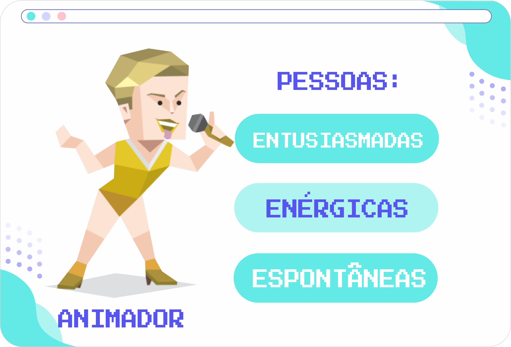

Personalidade Animador

Se alguém é visto cantando e dançando espontaneamente, essa é a pessoa com a personalidade de Animador. Os Animadores ficam presos na excitação do momento, e querem que todos os outros se sintam assim também. Nenhum outro tipo de personalidade é tão generosa com seu tempo e energia como os Animadores quando se trata de encorajar outros, e nenhum outro tipo de personalidade o faz com um estilo tão irresistível.